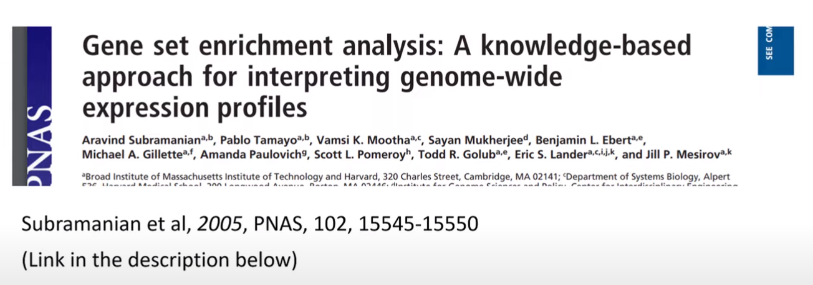

18 GSEA
- https://yulab-smu.top/biomedical-knowledge-mining-book/index.html
- https://yulab-smu.top/biomedical-knowledge-mining-book/enrichment-overview.html
- https://github.com/hawn-lab/workshops_UW_Seattle/tree/master/2021.07.14_GSEA

library(tidyverse)
library(msigdbr)
library(clusterProfiler)
library(fgsea)
packageVersion("msigdbr")
# if (!require("BiocManager", quietly = TRUE))
# install.packages("BiocManager")
#
# BiocManager::install("org.EcK12.eg.db")- clusterProfiler 패키지 사용을 위해서는 다음과 같이 설치를 수행함
- 만약 설치시
libglpk.so.40관련 에러가 발생할 경우apt-get install libglpk40수행
#if (!require("BiocManager", quietly = TRUE))
# install.packages("BiocManager")
#BiocManager::install("clusterProfiler")
# if (!require("BiocManager", quietly = TRUE))
# install.packages("BiocManager")
#
# BiocManager::install("ReactomePA")
# if (!require("BiocManager", quietly = TRUE))
# install.packages("BiocManager")
#
# BiocManager::install("enrichplot", force = TRUE)
library(clusterProfiler)
library(tidyverse)
library(org.EcK12.eg.db)
library(ReactomePA)
library(enrichplot)
library(Biostrings)
library(genbankr)18.1 Geneset database
A gene set is an unordered collection of genes that are functionally related. A pathway can be interpreted as a gene set by ignoring functional relationships among genes.
- Gene Ontology (GO)
- Kyoto Encyclopedia of Genes and Genomes (KEGG)
- Reactome (https://reactome.org/)
- org.db
library(org.EcK12.eg.db)
str(org.EcK12.eg.db)
class(org.EcK12.eg.db)
columns(org.EcK12.eg.db)
ls("package:org.EcK12.eg.db")
x <- org.EcK12.egENZYME
mapped_genes <- mappedkeys(x)
xx <- as.list(x[mapped_genes]
xx <- as.list(org.EcK12.egENZYME2EG)
as.list(org.EcK12.egALIAS2EG)[1:10]
as.list(org.EcK12.egACCNUM2EG)[1:2]
as.list(org.EcK12.egPATH)
?org.EcK12.egPATH
x <- org.EcK12.egPATH
mapped_genes <- mappedkeys(x)
xx <- as.list(x[mapped_genes])
as.list(org.EcK12.egACCNUM) %>% head
as.list(org.EcK12.egACCNUM2EG) %>% head
as.list(org.EcK12.egPATH)18.2 Read essential data
- Essential 데이터 읽고 분류
- cgenes: CNN 모형이 예측한 결과
- apgenes: APT 모형이 예측한 결과
library(Biostrings)
fileno <- "040"
name_md = paste0(fileno, "-AP_ConvLSTM_relEC")
name_date = "-220619"
tmps <- readDNAStringSet(paste0("06-PredData/", name_md, name_date, "_trainingset_results.fasta"))
geneinfo <- strsplit(names(tmps), split="__") %>%
do.call(rbind, .) %>%
as.data.frame
colnames(geneinfo) <- c("no", "ess", "pred", "id", "acc")
essdata <- geneinfo %>%
mutate(esstrue=ess=="ess", esspred=pred==1) %>%
dplyr::select(-c(no, ess, pred))
table(essdata$esstrue, essdata$esspred)
geneinfo2 <- essdata %>%
filter(acc!="-") %>%
#separate(Gene, c("bnum", "accnum"), sep="__") %>%
separate(acc, c("accnum", "tmp"), sep="\\.") %>%
dplyr::select(-tmp)
# mutate(egnum = {
# x = as.list(org.EcK12.egACCNUM2EG)[accnum]
# x[sapply(x, is.null)] <- NA
# unlist(x, use.names = FALSE)
# }) %>%
# mutate(fcval = C_Prob + 1) ## for the use of gseGO- read genbank file
#gbinfo <- readGenBank("03-PrepData/BW25113_CP009273.gb")
geneinfo3 <- mcols(gbinfo@cds) %>%
as.data.frame %>%
dplyr::select(gene, locus_tag) %>%
left_join(geneinfo2, by=c("locus_tag"="id")) %>%
mutate(egnum = {
x = as.list(org.EcK12.egSYMBOL2EG)[gene]
x[sapply(x, is.null)] <- NA
unlist(x, use.names = FALSE)
})
#selgenes018 <- geneinfo3
selgenes040 <- geneinfo3
selgenes018 %>%
inner_join(selgenes040, by=c("locus_tag"="locus_tag")) %>%
filter(esstrue.x == T & esstrue.y == T)18.3 GO enrichment analysis
- ACCnumber를 Entrez gene id로 전환
-
enrichGO함수 사용
selgenes <- geneinfo3 %>%
filter(esspred==T & esstrue==F)
ggo <- groupGO(gene = selgenes$egnum,
OrgDb = org.EcK12.eg.db,
ont = "CC",
level = 3,
readable = TRUE)
ggo@result %>%
filter(Count > 0) %>%
arrange(desc(Count))
egobp <- enrichGO(gene = selgenes$egnum,
OrgDb = org.EcK12.eg.db,
ont = "BP",
pAdjustMethod = "BH",
pvalueCutoff = 0.1,
qvalueCutoff = 0.5,
readable = TRUE)
goplot(egobp)
egobp@result %>%
filter(p.adjust < 0.1 & qvalue < 0.5)
egocc <- enrichGO(gene = selgenes$egnum,
OrgDb = org.EcK12.eg.db,
ont = "CC",
pAdjustMethod = "BH",
pvalueCutoff = 0.1,
qvalueCutoff = 0.5,
readable = TRUE)
#goplot(egocc)
egocc@result
egomf <- enrichGO(gene = selgenes$egnum,
OrgDb = org.EcK12.eg.db,
ont = "MF",
pAdjustMethod = "BH",
pvalueCutoff = 0.1,
qvalueCutoff = 0.5,
readable = TRUE)
#egomf@result %>%
# filter(if_any(where(is.numeric), ~!is.na(.)))
#goplot(egomf)
egomf@resultGO:0009244 lipopolysaccharide core region biosynthetic process
GO:0046401 lipopolysaccharide core region metabolic process
GO:0009103 lipopolysaccharide biosynthetic process
GO:0008653 lipopolysaccharide metabolic process
GO:1903509 liposaccharide metabolic process
GO:0009312 oligosaccharide biosynthetic process
GO:0006629 lipid metabolic process
GO:0044255 cellular lipid metabolic process
GO:0034637 cellular carbohydrate biosynthetic process
GO:0008610 lipid biosynthetic process
GO:0051246 regulation of protein metabolic process
GO:0033692 cellular polysaccharide biosynthetic process
GO:0009628 response to abiotic stimulus18.4 KEGG enrichment analysis
- KEGG
- Supported organisms (http://www.genome.jp/kegg/catalog/org_list.html)
search_kegg_organism('eco', by='kegg_code')
ecoli <- search_kegg_organism('Escherichia coli', by='scientific_name')- over-representation analysis
selgenes <- selgenes018 %>%
filter(esspred==T & esstrue==F)
kk <- enrichKEGG(gene = selgenes$egnum,
organism = 'eco',
keyType = "ncbi-geneid",
pvalueCutoff = 0.1)
kk@result %>%
dplyr::select(Description, qvalue)
selgenes <- selgenes040 %>%
filter(esspred==T & esstrue==F)
kk <- enrichKEGG(gene = selgenes$egnum,
organism = 'eco',
keyType = "ncbi-geneid",
pvalueCutoff = 0.1)
kk@result %>%
dplyr::select(Description, qvalue)018
eco00540 Lipopolysaccharide biosynthesis 0.00531493
eco00030 Pentose phosphate pathway 0.12748791
eco00650 Butanoate metabolism 0.17372322
eco03440 Homologous recombination 0.20574266
eco01250 Biosynthesis of nucleotide sugars 0.20574266
040
eco00540 Lipopolysaccharide biosynthesis 0.002359464
eco00650 Butanoate metabolism 0.050898735
eco02020 Two-component system 0.156421239
eco01250 Biosynthesis of nucleotide sugars 0.156421239
eco02010 ABC transporters 0.185342182
eco00030 Pentose phosphate pathway 0.396099588
library(pathview)
browseKEGG(kk, 'eco00540')
browseKEGG(kk, 'eco00030')
browseKEGG(kk, 'eco00650')
tmp <- pathview(gene.data = selgenes$egnum,
pathway.id = "eco00540",
species = "eco")
tmp <- pathview(gene.data = selgenes$egnum,
pathway.id = "eco00030",
species = "eco")
tmp <- pathview(gene.data = selgenes$egnum,
pathway.id = "eco00650",
species = "eco")
kk@result- gene set enrichment analysis
fcval <- selgenes$fcval
names(fcval) <- selgenes$egnum
fcval <- sort(fcval, decreasing = T)
kk <- gseKEGG(gene = fcval,
organism = 'eco',
keyType = "ncbi-geneid",
scoreType = "pos",
pvalueCutoff = 1)
mkk2 <- gseMKEGG(geneList = fcval,
organism = 'eco',
keyType = "ncbi-geneid",
scoreType = "pos",
pvalueCutoff = 1)
kk@result
selgenes018 %>%
inner_join(selgenes040, by=c("locus_tag"="locus_tag"))